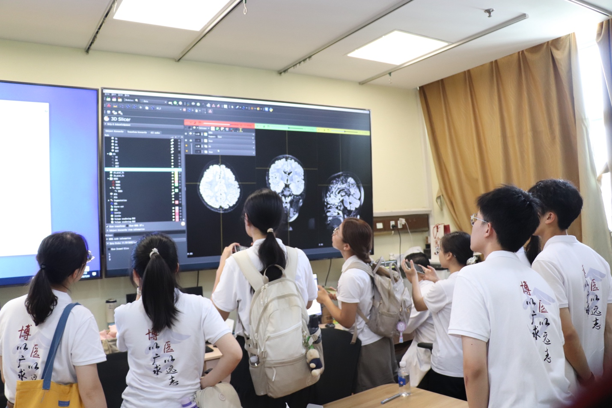

在瑞金医院帕金森病卓越诊疗中心与脑病中心，前沿的智慧医疗在这里有了直观的展现。
神经外科刘强强医生站在大屏前，熟练地操作着 3D Slicer 软件。伴随着演示与演算，复杂的颅脑影像被逐步转化为清晰的三维结构，精准外科中的解剖细节被一层层直观剖析开来。
同学们站在屏幕前认真观看，紧跟着讲授思路观察影像的切片与重构。
通过这次交流，大家不仅看到了数字技术在神经外科中的实际应用，也对科技如何辅助临床诊疗有了更具体的认识。
 山海有回声博医计划 · 实践纪实互动影像库浏览影像
山海有回声博医计划 · 实践纪实互动影像库浏览影像 实践现场 002 / 018
上海 · 瑞金医院

在瑞金医院帕金森病卓越诊疗中心与脑病中心，前沿的智慧医疗在这里有了直观的展现。
神经外科刘强强医生站在大屏前，熟练地操作着 3D Slicer 软件。伴随着演示与演算，复杂的颅脑影像被逐步转化为清晰的三维结构，精准外科中的解剖细节被一层层直观剖析开来。
同学们站在屏幕前认真观看，紧跟着讲授思路观察影像的切片与重构。
通过这次交流，大家不仅看到了数字技术在神经外科中的实际应用，也对科技如何辅助临床诊疗有了更具体的认识。